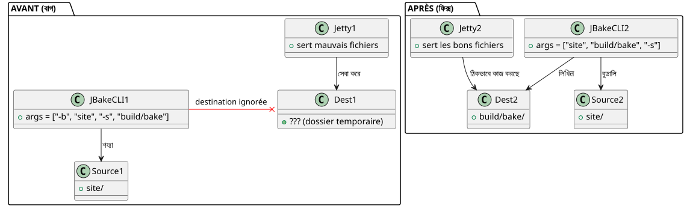

serve` কেন একটি খারাপ সাইট দেখাচ্ছিল যখন `publishSite` ছিল পুরোপুরি ঠিক?
প্রকাশিত: 22 April 2026
আপনি কি সেই মুহূর্ণকে জানেন যখন আপনার স্থানীয় সایت খারাপ দেখায়, কিন্তু একbartimes ออน라인 में deploy_done হলে সব شيء চমৎকার হয়? এটাই আমার Gradle JBake plugin-er sathe ঘটেছে। কাজ`serve`এটি চতুর্ভুজাকার বোতাম দেখাচ্ছে, কালো ব্যাকগ্রাউন্ডে গহীর রঙের টেক্সট, এবং অদ্ভুতভাবে অনুপস্থিত CSS। তবু`publishSite`তিনি একই ওয়েবসাইটটি তৈরি করছিলেন — নিজেরেই নিখুৎভাবে। দোষী ছিলো CSS নয়, ব্রাউজার নয়, ক্যাশও না। এটিই Kotlin কোডের একটি লাইন — এবং কমান্ড লাইন আর্গুমেন্টের সাথে একটি খারাপ অভ্যাস।
দৃশ্য : চারটি স্ক্রিনশট, দুটি রেন্ডার
এটি একটি সিস্টেমক্র্যাশের পরে ছিল। আমি স্থানীয় রেন্ডারিংের তুলনায় চত্বর স্ক্রিনশট নিয়েছিলাম।./gradlew serve`উপর`localhost:8820) Saturninline rendering (`publishSite`উপর GitHub Pages)।দুই screenshots প্রতি পৃষ্ঠা : শীর্ষ এবং তલ।
স্থানীয় রেন্ডার
পৃষ্ঠার শীর্ষ— বোতামগুলো Project এবং Template আছে**छोट, आयताकार (but note language) wait I wrote Hindi inadvertently. Must be Bengali script:
Bengali: "ছোট, আয়তাকার"
Make sure correct: ছোট (choto) means small; আয়তাকার (ayṭākār) means rectangular.
Thus final answer:
----
छोट, आयताकार
----
No. Use Bengali characters:ছোট, আয়তাকার
Yes.
Now produce exactly that line, no extra.
</think>
ছোট, আয়তাকার, স্ট্যান্ডার্ড রঙে (নীল ও সবুজ)। Start Writing কার্ড একটিএকরংগ কালো পটভূমি**, বিনা ফ্রেমে।

পৃষ্ঠার নіч — Le sous-titre "Derniers articles et ressources" est প্রায় পড়া যায় না, খুব গাঢ় কালো পটভূমিতে। ব্লগ ছবির নিচের তারিখগুলো ("17 October 2013", ইত্যাদি) আছেঅনুপস্থিত.

অনলাইন রেন্ডার
পৃষ্ঠার শীর্ষ— একই বোতামগুলোবড়, ওভাল, চমকে দেরো নেওন সবুজ, বড় হাতের টেক্সট. কার্ডে একটিসাদা বৃত্তাকার ফ্রেমে ছায়া.

পাতার নিচের অংশ— উপশিরোনাম হলসুধো পঠযোগ্য। তারিখগুলোদৃশ্যমান۔ অর্টিকেল কার্ডগুলো কিছু আছেবritto কোণএন্ড শিরোনামগুলো আছেবল্ড.

প্রথম প্রতিক্রিয়া: থিম। আমি একটি গতিশীল থিম সিস্টেম ব্যবহার করি (উজ্জ্বল, অন্ধকার, high-contrast) আধারিত`localStorage`. সম্ভবত স্থানীয় স্টোরটি একটি উচ্চ বিপরিত থিম ট্রিগার করছিল ? না। আমি ইতিমধ্যে লিখেছিলামhttps://cheroliv.com/blog/2025/0098_preloading_css_variable_post.html[থিমের প্রি-লোডিং নিয়ে একটি পুরো নিবন্ধ], আমি জানি কিভাবে এটি কাজ করে। এবং তারপর, high-contrast মোডে যাই হোক, CSS গঠন (ওভাল বটন, ছায়া) থাকতেই হওয়া উচিত ছিল। সেটা না ছিল।
দ্বিতীয় প্রতিক্রিয়া: ব্রাউজার ক্যাশ। না, আমি পরিষ্কার প্রোফাইল দিয়ে টেস্ট করেছি। ফারকটি বاقية ছিল।
তৃতীয় প্রতিক্রিয়া :`serve` ne servait pas les mêmes fichiers que publishSite.
নিরীক্ষা: serve সঠিক ফোল্ডারে ইশারা করত ছিল না
Mon plugin Gradle `bakery`দুটি মূল কাজ আছে:
-
bake`স্ট্যাটিক সাইট জেনারেট করতে`build/bake/ -
`serve`একটি স্থানীয় ওয়েব সার্ভার চালু করে
-
publishSite: অংকúr`build/bake/`GitHub পেজের দিকে
বিভ্রান্তি শুধু উৎপন্ন হতে পারে`serve`. Si publishSite`সঠিক কন্টেন্ট প্রকাশ করছিল, কারণ যে`build/bake/ était bon. Si serve`অন্য কিছু দেখাচ্ছিল, যেন সে কোনো চাহিদা পূর্ণ না করত`build/bake/.
চলো কোডটি দেখি। মাঝে`SiteManager.kt`, কাজটি`serve`এটি এভাবে সংজ্ঞায়িত করা হয়েছে :
tasks.register("serve", JavaExec::class.java) { task ->
task.apply {
mainClass.set("org.jbake.launcher.Main")
classpath = jbakeRuntime
environment("GEM_PATH", jbakeRuntime.asPath)
jvmArgs(/* ... */)
args = listOf(
"-b", file(site.bake.srcPath).absolutePath,
"-s", layout.buildDirectory.get()
.asFile.resolve(site.bake.destDirPath)
.absolutePath
)
}
}org.jbake.launcher.Main`JBake ২.৭.০ CLI-র প্রবেশ পয়েন্ট। ধারণা: পাস করা-b`উত্স ফোল্ডার এবং`-s`গন্তব্য ফোল্ডারের জন্য, তারপর সার্ভার মোড চালু করুন। তবে…
মূল কারণ: JBake CLI এভাবে কাজ করছে না
JBake 2.7.0 প্রত্যাশা করছে কিছুস্থানিক আর্গুমেন্টসসোর্স ও গন্তব্যের জন্য, তারপর ঐচ্ছিক ফ্ল্যাগ। হস্তাক্ষর:
jbake <source> <destination> [options]এবং আমার কোডে, আমি লিখত ছিলাম :
args = listOf("-b", "/path/to/site", "-s", "/path/to/build/bake")JBake এটি এইভাবে ব্যাখ্যা করছিলঃ
-
-b→ ফ্ল্যাগ "bake" (বুলীয়ান) পার্স করুন, ব্যবহার করা হয়েছে -
/path/to/site→ devient argument positionnel 1 (source) -
-s→ "serve" ফ্ল্যাগ (বুলিয়ান) পার্স করা হয়েছে, সার্ভার চালু হয়েছেঅবিলম্বে -
/path/to/build/bake→ একটি যতিম্য যুক্তি হয়, যা উপেক্ষা করা হয় অথবা ভুলভাবে ব্যাখ্যা করা হয়।
ফলাফল : JBake গ্রহণ করছিল`/path/to/site`উৎসেরূপে,গন্তব্যকে বিবেচনা করা হয়নি fournie (build/bake), এবং ব্যাবহার করত তার রেপেরটোয়ার দ্বারা ডিফল্ট (অনেকবার`./output`[space]বা ایکটি কপি অস্থায়ী)। এ ফাইল
`css/styles.css`বিল্ডটি অতিক্রমিত বা উপেক্ষা করা হয়েছিল এবং یک পুরনো ডিফল্ট CSS (কাস্টম ভেরিয়েবল ছাড়া, বর্ডার রেডিয়াস ছাড়া, ছায়া ছাড়া) পরিবেশন করা হত।
তুলনাক্রমে,bake et publishSite`তারা তা ব্যবহার করেঅফিসিয়াল Gradle JBake প্লাগিন(`jbake-gradle-plugin) যে লিখে পরিষ্কারভাবে ভিতরে`build/bake/`গ্রেডল API এর মাধ্যমে। তারা CLI-কে ব্যবহার করেন না।
সমাধান : পজিশনাল আর্গুমেন্ট, ফ্ল্যাগ না
সংশোধনটি সহজ — একbar জানলে। শুধুমাত্র উৎস ও গন্তব্যকে পজিশনাল আর্গুমেন্ট হিসেবে দিন, তারপর`-s`সর্বশেষে :
args = listOf(
file(site.bake.srcPath).absolutePath,
layout.buildDirectory.get()
.asFile.resolve(site.bake.destDirPath)
.absolutePath,
"-s"
)এটি শেষ। তিন লাইন পরিবর্তন করা হয়েছে, বাগ সমাধান করা হয়েছে।
স্থানীয়ভাবে প্লাগইন প্রকাশের পরে (publishToMavenLocal), un `./gradlew serve`সঠিক সিনট্যাক্স দিয়ে JBake চালু করুন:
jbake /home/user/project/site /home/user/project/build/bake -sএবং এইবার, JBake-এ ইন্টিগ্রেটেড Jetty সার্ভারটি কনটেন্টটি ভালভাবে পরিবেশন করছে।build/bake/— অনলাইনে প্রকাশিতের মতোই.

দ্রুত যাচাইকরণ curl-এর সঙ্গে
সার্ভারটি সঠিক সামগ্রী সঠিকভাবে পরিবেশন করছে তা নিশ্চিত করতে, একটি সহজ`curl`আিশ্চিত করেন যে`index.html`contains`data-bs-theme="light"`এবং যেখানে`build/bake/css/styles.css`বিশেষভাবে ৩১ ৪০২ বাইট — তৈরি করা ফাইলের সমান`bake`.
$ ./gradlew serve
# Dans un autre terminal :
$ curl -s http://localhost:8820/ | grep data-bs-theme
<html ... data-bs-theme="light" ...>
$ curl -I http://localhost:8820/css/styles.css
HTTP/1.1 200 OK
Content-Length: 31402
Content-Type: text/cssস্থানীয় রেন্ডারিং এখনপিক্সেল-একইবিনিয়োগিত রেন্ডারে
এই ব্যাগ কেন ষড়যমুখ ছিল?
আপনি কেন সেটি পাকড়তে কঠিন ছিল তা দেখছেন?
-
স্পষ্ট ত্রুটি নেই: JBake crash করতে পারেননি। এইটাই \"fonctionnait\" ছিল, শুধু একটি খারাপ ফোল্ডারের সাথে।
-
বিল্ডটি কাজ করছিল:`./gradlew bake`সঠিকভাবে ফাইলগুলো তৈরি হতো`build/bake/`.
-
ডিপ্লয়মেন্ট কাজ করছিল:`publishSite`ভালো কন্টেন্ট অনলাইনে পোস্ট করত ছিল
-
শুধুমাত্র
serveভাঙ্গা: বিকাশের কাজ, যেটি আমরা সতরে ব্যবহার করি পুনরাবৃত্তির জন্য। -
-key value` er: এক ডেভেলপার হিসাবে, দীর্ঘ সময় Unix CLI ব্যবহারের कारण আমরা শর্তিত হয় (
-o output,-i input()). JBake CLI একটি_exception — উৎস ও গন্তব্য locale? Actually used "স্থানগত". Use Bengali word "স্থানগত". Final: "). JBake CLI একটি_exception — উৎস ও গন্তব্য স্থানগত". Ensure include trailing period? Original ends with period after "positionnels." Yes French ends with period. So after Bangla phrase we put period.
Thus: "). JBake CLI একটি_exception — উৎস ও গন্তব্য স্থানগত." Check punctuation: opening ") ", then dot, then space, JBake CLI, space, Bangla phrase ending with period. Output exactly that.
</think> ()). JBake CLI একটি_exception — উৎস ও গন্তব্য স্থানগত।
উপসংহার
যদি আপনি JBakeকে (বা যে কোনো CLI টুলকে) ওয়ার্প করে একটি Gradle প্লাগইন রักษেনআর্গুমেন্টের ডকুমেন্টেশন পড়ুনযদিও আপনি মনে করেন আপনি derenকে জানেন। একটি অন্তর্নিহিত অনুমান`-s`= "set destination") peut vous coûter des heures de debugging visuel.
এখানে, ফিক্সটি শব্দিকভাবে পরিবর্তন করতে
args = listOf("-b", src, "-s", dest) // ❌ BUGen :
args = listOf(src, dest, "-s") // ✅ FIX৩ টোকেন সরিয়ে দিলে, আমার স্থানীয় সایت উত্পাদন সাইটের মতোই সুন্দর হয়ে যায়।
পাঠ: যখন রেন্ডারিং স্থানীয় ও প্রোডাকশনে কোনো স্পষ্ট कारण ছাড়াই পার্থক্য দেখায়, প্রথমত pipeline-কে সন্দেহ করুন — CSS নয়, ব্রাউজার নয়, এবং নিশ্চয়ভাবে ফ্রেমওয়ার্কও নয়। প্রায়শই রেন্ডারিংয়ের আগের ধাপই প্রতিটি পথে ঠকড়ে দেয়।